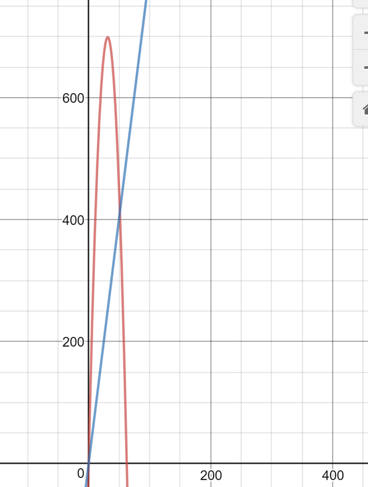

$\newcommand{\uvec}[1]{\boldsymbol{\hat{\textbf{#1}}}}$
-
- $v = 640 \frac{m}{s}$
- $v_0 = 0 \frac{m}{s}$
- $\Delta d = 1.2 m$
- $\Delta d = \frac{1}{2} (v_0 + v)t$
- $\frac{2 \Delta d}{v} = t$
- $\frac{2(1.2)}{640} = t$
- $t = 0.00375 s$
-
- $v_0 = 1020 \frac{km}{h}$
- $t = 1.4 s$
- $v_0 = 283.3 \frac{m}{s}$
- $v = 0 \frac{m}{s}$
- $v = v_0 + at$
- $0 = 283.3 + 1.4a$
- $a = -202.35 \frac{m}{s^2} = 20.64g$
-
- The particle is accelerating in the positive direction.
- $x(t) = \frac{1}{2} at^2$
- $a = 4 \frac{m}{s^2}$
-
- $v_0 = 161 \frac{km}{h} = 44.72 \frac{m}{s}$
- $v = 29 \frac{km}{h} = 8.056 \frac{m}{s}$
- $\Delta d = 676 m$
- $\Delta d = \frac{1}{2}(v_0 + v)t$
- $\frac{2 \Delta d}{v_0 + v} = t$
- $\frac{1352}{44.72 + 8.056} = t$
- $t = 25.6177s$
- $8.056 = 44.72 + 25.6177 a$
- $a = -1.4308 \frac{m}{s^2}$
- This isn't the answer that appears on the assignment, but I checked it a few times and I don't know where the mistake is.

-
- $\Delta d = -145m$
- $a = -9.8 \frac{m}{s^2}$
- $v_0 = 0$
- $\Delta d = v_0 t + \frac{1}{2} at^2$
- $-145 = \frac{-9.8t^2}{2}$
- $-290 = -9.8t^2$
- $t = \sqrt{29.59} = 5.439s$
- $v = -9.8(5.439) = -53.3022 \frac{m}{s}$
- $a = 25g = 245 \frac{m}{s^2}$
- $v = 0$
- $v_0 = -53.3022 \frac{m}{s}$
- $v^2 = v_0^2 + 2a(\Delta d)$
- $0 = 2841.1245 + 490 \Delta d$
- $\Delta d = \frac{-2841.1245}{490}$
- $\Delta d = 5.798m$
-
- $\Delta d = 100m$
- $a = -9.8 \frac{m}{s}$
- $-100 = -9.8 t^2$
- $t_1 = 3.194$
- $v_{50} = -9.8(3.194) = -31.3050 \frac{m}{s}$
- $50 = -31.3050t + \frac{1}{2}(-9.8)(t^2)$
- $100 = -62.61t - 9.8t^2$
- $t = 3.189s$
-
- $t = 0.200s$
- $\Delta d = 0.544m$
- $a = -9.8 \frac{m}{s^2}$
- $0.544 = 0.2 v_0 - \frac{1}{2} 9.8(0.2^2)$
- $0.544 = 0.2 v_0 - 0.196$
- $v_0 = 3.7 \frac{m}{s}$
- $v^2 = v_0^2 + 2a(\Delta d)$
- $v_{0.544} = \sqrt{3.7^2 + 2(-9.8)(0.544)} = 1.74 \frac{m}{s}$
- $0 = 3.7^2 + 2(-9.8)(d_{max})$
- $-13.69 = -19.6 d_{max}$
- $d_{max} = 0.698m$
- The armadillo travels $0.698 - 0.544 = 0.154m$ higher.
-
- $v_0 = 12 \frac{m}{s}$
- $y = 80m$
- $a = -9.8 \frac{m}{s^2}$
- $-80 = 12t + \frac{1}{2}(-9.8)(t^2)$
- $-160 = 24t - 9.8t^2$
- $t = 5.447s$
- $v = 12 + -9.8(5.447) = 41.3806 \frac{m}{s}$
-
- $v_{elevator} = 10 \frac{m}{s}$
- $y_0 = 30m$
- $v_{ball} = 30 \frac{m}{s}$
- $v = v_0 + at$
- $0 = 30 - 9.8t$
- The ball takes 3.06 seconds to reach its peak.
- $y = 30(3.06) - \frac{1}{2} 9.8(3.06^2)$
- The ball travels $y = 45.918m$ above the ground.
- $y_{elevator} = 10t + \frac{1}{2}9.8t^2$
- $y_{ball} = 20t - \frac{1}{2} 9.8t^2$
- The ball collides with the elevator floor at $4.08s$
-
- $a = -9.8 \frac{m}{s^2}$
- $t = 0.5s$
- $\Delta d = 2m$
- $2 = 0.5v - \frac{1}{2} 9.8 (0.5^2)$
- $2 = 0.5v - 1.225$
- $v = 6.45 \frac{m}{s}$ at the top of the window
- When the pot stops falling, $v = 0$.
- $0 = 6.45^2 - 19.6(\Delta d)$
- $\Delta d = 2.12m$ above the window.
- Again, this isn't the same as the answer we found in class (2.34), but it's close enough that it might just be a rounding error I think.